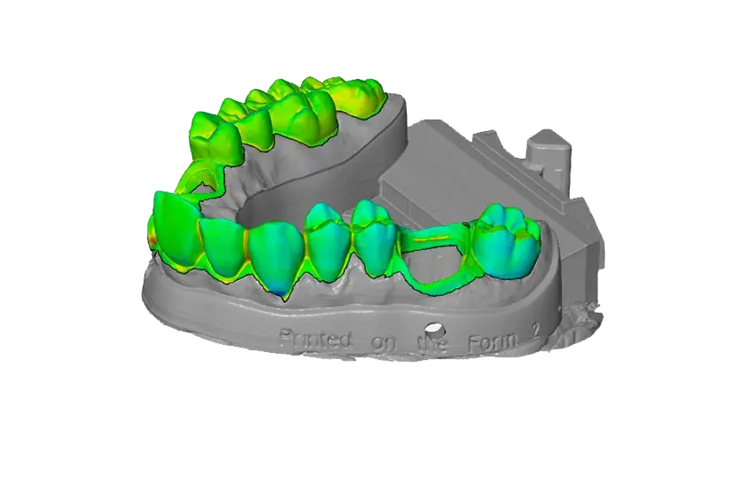

About
Platform
For developer
Log in
3Д моделирование зуба
Получение 3Д модели зуба в несколько кликов. Приступите к генерации прямо сейчас.

Для генерации требуется три проекции необходимых зубов
Первая проекция - место отсутсвия зуба и его соседи с внешней стороны Вторая проекция - зуб антагонист с внешней стороны Третья проекция - фиссура зуба антагониста. С помощью этих проекций наша нейронная сеть сгенерирует 3D модель недостающего зуба. Приступите к генерации после загрузки изображений
Соседи
Антагонист
Фиссура антагониста
Приступить к генерации